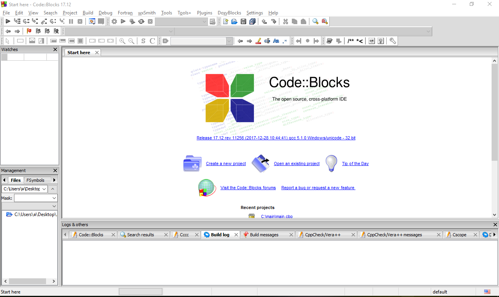
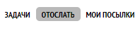
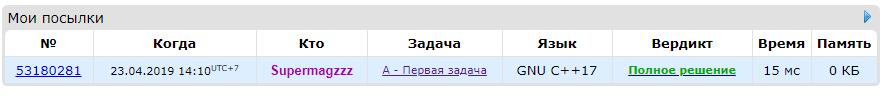

Совсем скоро мы начнем изучать программирование, но для этого нам нужна среда разработки.
Среда разработки — это программа, в которой можно писать и запускать код. Вам она понадобится для того, чтобы практиковаться и выполнять упражнения к урокам. Есть много разных сред, и у каждой свои плюсы и минусы. Для обучения мы советуем использовать Codeblocks, так как она весит всего 80 МБ, но при этом обладает всеми нужными функциями. В этой статье мы расскажем, как установить эту среду, но если вы хотите использовать другую, то вам не составит труда найти инструкцию, по её установке, в интернете.
Другие популярные среды разработки:
Microsoft Visual Studio (Профессиональная среда разработки для больших проектов)
https://csacademy.com/workspace (Онлайн среда разработки, ничего устанавливать не нужно, но нужен постоянный доступ в интернет)
Dev C++ (Легкая, но старая среда)
В приложении мы будем приводить ссылки, которые нужно открывать на компьютере. Чтобы скопировать ссылку, просто нажмите на нее. Теперь вы можете отправить её на свой компьютер любым удобным способом.
Ссылка на скачивание Codeblocks:
Дождитесь пока файл скачается и откройте его. Чтобы установить программу, нажмите на следующие кнопки:
Next -> I Agree -> Next
Дождитесь установки программы. Когда установка завершится вы увидите надпись
Do you want to run Codeblocks now? (Вы хотите сейчас запустить Codeblocks?). Нажмите Yes
В следующих двух окнах нажмите кнопку OK.
Eсли вы все сделали правильно, то через некоторое время увидите следующее окно

Нажмите на кнопку Create a new project в центре экрана, чтобы создать новый проект. Для того, чтобы решать наши задачи, вам нужно создавать
консольные приложения (Console application). Позже мы объясним, что это такое. Нажмите соответствующую кнопку и перейдите к следующему окну.
Сейчас вы видите окно приветствия. Нажмите Next, чтобы перейти к следующему окну.
Теперь вам предлагают выбрать язык программирования. Выберите C++ и нажмите кнопку Next.
Сейчас вам нужно придумать название своего проекта. Введите его в строке Project title.
В строке Folder to create project in: выберите место на компьютере, где вам удобно хранить ваш проект. В моем случае это диск C.
Нажмите кнопку Next.

На следующем окне находится служебная информация. Можете ничего не менять и нажать Finish.
Если вы все сделали правильно, то слева вы увидете свой проект и папку Sources, где будет находится ваш код. Откройте ее, нажав на
плюсик рядом с названием папки.

Два раза нажмите на файл main.cpp, чтобы открыть его. Теперь вы можете увидеть какую-то программу (в следующем уроке мы разберем ее). Давайте попробуем запустить ее.
Для запуска программы, ее нужно сначала скомпилировать, а потом выполнить. Компиляция — это процесс, который превращает вашу программу в удобный для компьютера машинный код. Выполнение — это процесс запуска, скомпилированной программы.
Значок скомпилировать - желтая шестеренка
Значок выполнить - зеленый треугольник.
Но, чтобы скомпилировать и выполнить программу одновременно, можно воспользоваться кнопкой с желтой шестернкой и маленьким зеленым треугольником. Нажмите ее.

Эта программа выводит в консоль надпись Hello world!. Если все сделано правильно, то откроется такое окно.
Ваша среда для разработки готова! Теперь вы можете писать и запускать здесь свои программы. Консольное приложение — это такая программа, которая читает данные из консоли, обрабатывает данные и выводит информацию обратно в консоль. Примерно так и происходит разработка больших приложений. Вы пишете маленькие программы, которые взаимодействуют между собой передавая друг другу информацию. Консоль — это удобный способ для взаимодействия человека с программой. Вскоре вы также научитесь как программы могут взаимодействовать между собой.
Если вы закроете Codeblocks и захотите открыть его снова, то не обязательно создавать новый проект. Вы можете открыть ваш прошлый проект, нажав на эту кнопку.

Также желательно установить одну из новых версий C++. Для этого нужно открыть владку Settings на верхней панели Codeblocks и нажать
на кнопку Compiler...
Теперь поставтьте галочку напротив третьей строчки Have g++ follow the C++14 ISO C++ language standard и нажмите OK.
Но для того, чтобы мы могли проверить правильность ваших программ, вы должны иметь аккаунт на сайте Codeforces. Там находятся все наши задачи и программа, которая проверяет ваш код. Если у вас еще нет аккаунта на Codeforces, зарегистрируйтесь там.
Чтобы зарегистрироваться на Codeforces, нужно перейти по этой ссылке:
Придумайте свой никнейм (Хэндл), введите e-mail и пароль, после чего нажмите на кнопку Зарегистрироваться. Осталось только подтвердить свой e-mail, перейдя по ссылке в письме, которое вам придет. Аккаунт создан!
Чтобы сдавать задачи вам нужно зарегистрироваться в группе. Для этого нужно только перейти по этой ссылке и нажать кнопку вступить.
В конце каждого урока будет ссылка на список задач. Также вы можете открыть задачи, нажав на кнопку рядом с названием темы в меню курса. Там есть оффлайн условия, возможность посмотреть разбор и отметить задачу, как решенную. Вот ссылка с задачами для этого урока. Не спешите переходить по ней, сначала дочитайте статью.
Перейдя по этой ссылке, вы увидите одну задачу. Если бы задач было несколько, то вы бы смогли переключаться между ними с помощью стрелочек.
Откройте ее на компьютере, перейдя по ссылке под условиями задачи. И на компьютере, и на телефоне вы увидите условия задачи и то, что будет во входном и выходном файле. Нажмите кнопку Отослать, на компьютере.

В центре экрана вы увидите большое окно с надписью Исходный код: . Скопируйте код из Codebocks в это окно. В будущем вы будете писать свой код и также копировать его сюда.
Убедитесь, что в поле Язык: указано значение "GNU G++17 7.3.0".
Нажмите кнопку Отослать.

Вы увидите таблицу с вашими решениями. Последнее решение находится вверху. В столбце вердикт может быть одно из следующих значений:
В очереди - подождите немного, скоро ваше решение проверится.
Выполняется на тесте - ваше решение проверяется в текущий момент времени.
Неправильный ответ - ваше решение неверно.
Ошибка выполнения - в вашей программе ошибка и она вылетела во время работы.
Ошибка компиляции - в вашем коде есть ошибки и программу запустить невозможно.
Полное решение - все хорошо, ваше решение правильное.

Если вы увидели "Полное решение", значит вы закончили подготовку к курсу. Не забудьте отметить эту задачу, как решенную в приложении. Удачи в освоении программирования!